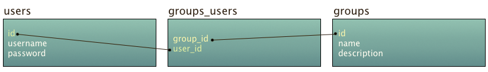

ORM
- Naming conventions
- Basic usage
- Relations
- Automatic typecasting
- Mutators and accessors
- Scopes
- Mass assignment
- Optimistic locking
- Read-only records
- Cloning records
- Array and JSON representations
- Traits
The ORM lets you map your database tables to objects and create relations between them.
Naming conventions
The Mako ORM does not impose a naming standard on model class names but best practice is to use the camel cased singular form of the table name.
| Table name | Model name |
|---|---|
| articles | Article |
| import_jobs | ImportJob |
If you want to use the ORM on an existing database and don't want to rename all your tables then you can use the $tableName property to define the name of your table.
All tables are also expected to have an auto incrementing primary key column named id. The name of the primary key column can be configured using the $primaryKey property.
The ORM expects foreign key names to use the following the pattern <model name>_id (e.g., item_id, user_id). This can be configured when setting up relations and we'll get back to this later on.
Key types
As previously mentioned, the ORM assumes that all your tables have an auto incrementing primary key by default. You can make it generate UUIDs, make your own custom key generator or tell it that your table doesn't have a primary key.
Use the $primaryKeyType property to define the key type.
| Key type | Constant |
|---|---|
| Auto incrementing | ORM::PRIMARY_KEY_TYPE_INCREMENTING |
| UUID | ORM::PRIMARY_KEY_TYPE_UUID |
| Custom | ORM::PRIMARY_KEY_TYPE_CUSTOM |
| None | ORM::PRIMARY_KEY_TYPE_NONE |
If you choose to use your own custom key generator then you'll have to implement the
generatePrimaryKeymethod in your model class. You must also make sure that the generated value is unique.
Basic usage
CRUD
Lets say you have a table called articles with three columns (id, title and content). This is all you need to interact with the table:
<?php
namespace app\models;
class Article extends \mako\database\midgard\ORM
{
protected $tableName = 'articles';
}
Creating a new record is as simple as this:
$article = new Article();
$article->title = 'Super awesome stuff';
$article->content = 'This is an article about some super awesome stuff.';
$article->save();
You can then fetch the article by its primary key value like this:
$article = Article::get(1); // Will return FALSE if not found
The ORM is built on top of the query builder so you can also use other criteria to find your record:
$article = Article::where('title', '=', 'Super awesome stuff')->first();
Modifying an existing record is done like this:
$article = Article::get(1);
$article->title = 'New title';
$article->save();
And deleting a record is done like this:
$article = Article::get(1);
$article->delete();
Selecting columns
By default the ORM selects all columns from the result set. You can specify the columns you want to select like this:
$articles = Article::select(['id', 'title'])->all();
Note that the primary key will automatically be included in the array of selected columns.
Joins
You can also use joins when working with the ORM. In the following example we'll select all articles that have at least one comment:
$articles = Article::join('comments', 'article.id', '=', 'comments.article_id')->all();
The code above will execute the following SQL:
SELECT `articles`.* FROM `articles` INNER JOIN `comments` ON `article`.`id` = `comments`.`article_id`
It will return duplicates for articles that have more than one comment. This can be solved using a distinct select:
$articles = Article::distinct()->join('comments', 'article.id', '=', 'comments.article_id')->all();
Note that joining will make the selected records read-only.
Relations
Being able to set up relations between tables is important when working with databases. The ORM supports has one, belongs to, has many and many to many relations.
Has one
Lets create a user model and a profile model and set up a has one relation between them.
<?php
namespace app\models;
class User extends \mako\database\midgard\ORM
{
protected $tableName = 'users';
public function profile()
{
return $this->hasOne('\app\models\Profile');
}
}
Lets not bother creating a relation in the profile model jus yet.
<?php
namespace app\models;
class Profile extends \mako\database\midgard\ORM
{
protected $tableName = 'profiles';
}
You can now access a users profile like this:
$user = User::get(1);
$profile = $user->profile;
Has many
We can now add a has many relation to our user model.
public function articles()
{
return $this->hasMany('\app\models\Article');
}
We can now fetch all the articles that belong to the user like this:
$user = User::get(1);
$articles = $user->articles;
Belongs to
The belongs to relation is the opposite of a has one or has many relation.
We can continue to build on the article model and add a belongs to relation. All we need to get this to work is add a foreign key column named user_id to the articles table.
public function user()
{
return $this->belongsTo('\app\models\User');
}
Fetching the user that owns the article can now be done line this:
$article = Article::get(1);
$user = $article->user;
Many to many
The many to many relation requires a junction table between the two related tables. The name of the junction table should be the names of the two tables you want to join in alphabetical order separated by an underscore.

The relation would then look like this in the user model:
public function groups()
{
return $this->manyToMany('\app\models\Group');
}
And like this in the group model:
public function users()
{
return $this->manyToMany('\app\models\User');
}
This is how you would use the relations:
// Fetch all the groups that the user belongs to
$user = User::get(1);
$groups = $user->groups;
// Fetch all the users that are in the group
$group = Group::get(1);
$users = $group->users;
Relation criteria
The ORM is built on top of the query builder so you can add query criteria to your relations.
public function articles()
{
return $this->hasMany('\app\models\Article')->orderBy('title', 'asc');
}
They can be in the relation definition itself or you can add them when you're accessing the related records.
$articles = $user->articles()->orderBy('title', 'asc')->all();
Creating related records
The ORM lets you create related records without having to worry about remembering to set the right foreign key value.
$user = User::get(1);
$article = new Article();
$article->title = 'My article title';
$article->content = 'My article content';
$user->articles()->create($article);
The article will now be saved and the value of the user_id foreign key will automatically be set to the users id. This method works for both has one and has many relations.
The many to many relation is a bit different since it requires a junction table. You'll have to use the link method to create a link between two related records.
$user = User::get(1);
$group = Group::get(1);
$user->groups()->link($group);
// This will produce the same result as the example above:
$user = User::get(1);
$group = Group::get(1);
$group->users()->link($user);
You can also pass the primary key value of the record you want to link instead of the object.
The unlink method is used to remove the link between the records:
$user->groups()->unlink($group);
// This will produce the same result as the example above:
$group->users()->unlink($user);
Eager loading
Loading related records can sometimes cause the 1 + N query problem. This is where eager loading becomes handy.
foreach(Comment::limit(10)->all() as $comment)
{
$comment->user->username;
}
The code above will execute 1 query to fetch 10 comments and then 1 query per iteration to retrieve the user who wrote the comment. This means that it has to execute 11 queries in total. Using eager loading can solve this problem:
foreach(Comment::including('users')->limit(10)->all() as $comment)
{
$comment->user->username;
}
The code above will produce the same result as the previous example but it will only execute 2 queries instead of 11.
You can eager load more relations using an array and nested relations using the dot syntax:
$articles = Article::including(['user', 'coments', 'comments.users'])->limit(10)->all();
You can also define relations to eager load in the model definition using the $including property. This is useful if you know that you're going to need to eager load the relations more often than not.
protected $including = ['user', 'comments', 'comments.user'];
You can then disable eager loading of the relations if needed by using the excluding method:
$articles = Article::excluding(['user', 'comments'])->limit(10)->all();
Overriding naming conventions
The ORM relations rely on strict naming conventions but they can be overridden using the optional parameters of the relation methods. The first optional parameter lets you set the name of the foreign key. The many to many relation method has two additional parameters that let you set the junction table name and the junction key.
In the example below we are telling the relation to use a foreign key named user instead of the default, which should have been user_id.
public function articles()
{
return $this->hasMany('\app\models\Article', 'user');
}
Automatic typecasting
You can configure your model to automatically typecast values on the way in and out of your database. This is done using the $cast property where the array key is the column name and the array value is the type you want to cast the column value to.
Scalars
protected $cast = ['id' => 'integer', 'published' => 'boolean'];
Valid scalar types are boolean, integer, float and string.
Note that the maximum value for
integerisPHP_INT_MAX.
DateTime
The ORM and query builder both allow you to save dates as DateTime objects without first having to convert them to the appropriate format. Wouldn't it be nice if you could also automatically retrieve them as DateTime objects when fetching them from the database as well? This is possible thanks to the date typecast.
protected $cast = ['joined_at' => 'date', 'last_seen' => 'date'];
You'll now be able to treat the joined_at and last_seen values as DateTime objects.
$user = User::get(1);
$lastSeen = 'The user was last seen on ' . $user->last_seen->format('Y-m-d at H:i');
Mutators and accessors
Mutators and accessors allow you to modify data on the way in and out of the database. Mutators are suffixed with Mutator and accessors and suffixed with Accessor.
The following mutator will encode the value when its assigned.
protected function numbersMutator(array $numbers)
{
return json_encode($numbers);
}
You can assign the value like any normal value and it will be JSON-encoded internally in the model making it possible to store it in the database.
$model->numbers = [1, 2, 3, 4];
And the following accessor will decode the value when accessing it.
protected function numbersAccessor($numbers)
{
return json_decode($numbers)
}
You can now retrieve the value like any normal value and it will automatically be JSON-decoded for you.
$arrayOfNumbers = $model->numbers;
Scopes
Scopes allow you to specify commonly used query criteria as methods. All scope methods must be prefixed with the Scope suffix.
public function publishedScope($query)
{
return $query->where('published', '=', 1);
}
public function popularAndPublishedScope($query, $count)
{
return $query->where('published', '=', 1)->where('views', '>', $count);
}
You can now retrieve published articles like this:
$articles = Article::published()->all();
$articles = Article::popularAndPublished(1000)->all();
Scopes also work through relations:
$articles = User::get(1)->articles()->published()->all();
$articles = User::get(1)->articles()->popularAndPublished(1000)->all();
Mass assignment
The ORM allows you to use mass assignment when creating or updating records. This can save you a few lines of code since you don't have to set each value individually but it can open attack vectors in your application if you're not careful.
// Create a new record using mass assignment
User::create($_POST);
// Update an existing record using mass assignment
$article = User::get(1);
$article->assign($_POST);
$article->save();
The code above might seem like a good idea until a hacker adds an is_admin field to the POST data and gives himself admin privileges.
You can make mass assignment a bit more secure by using the $assignable property and define a whitelist of fields that can be set through mass assignment. But you should really only use this feature when you trust the input data a 100%.
Read-only records
You can make your records read-only by setting the $readOnly property to TRUE. Doing so will make it impossible to update or delete the records and a ReadOnlyRecordException will be thrown if attempted.
// Load a read-only record
$user = User::get(1);
// Will throw a mako\database\midgard\ReadOnlyRecordException
$user->delete();
Cloning records
You can clone records using the clone keyword:
$clone = clone User::get(1);
$clone->save();
You can also clone an entire result set:
$clones = clone User::all();
foreach($clones as $clone)
{
$clone->save();
}
Array and JSON representations
You can convert an ORM object or result set to an array using the toArray method and to JSON using the toJson method. The ORM objects and result sets will also be converted to JSON when casted to a string.
$json = (string) Article::limit(10)->all();
You can exclude columns from the array and JSON representations by using the $protected property.
Traits
Timestamped
You'll often want to track when a record has been created and when it was updated. The TimestampedTrait will do this for you automatically.
The trait requires you to add two DATETIME columns to your database table, created_at and updated_at. You can override the column names using the $createdAtColumn and $updatedAtColumn properties.
class Article extends \mako\database\midgard\ORM
{
use \mako\database\midgard\traits\TimestampedTrait;
}
You can touch the updated_at timestamp without having to modify any other data by using the touch method.
$article = Article::get(1);
$article->touch();
You can also make the ORM touch related records upon saving by listing the relations you want to touch in the $touch property.
protected $touch = ['foo', 'foo.bar']; // Nested relations are also supported
Optimistic locking
When two users are attempting to update the same record simultaneously, one of the updates will likely be overwritten. Optimistic locking can solve this problem.
To enable optimistic locking you need to use OptimisticLockingTrait trait. The database table also needs an integer column named lock_version. The name of the column can be configured using the $lockingColumn property.
class Article extends \mako\database\midgard\ORM
{
use \mako\database\midgard\traits\OptimisticLockingTrait;
}
The second save in the example below will throw a StaleRecordException since the record is now outdated compared to the one stored in the database.
$article1 = Article::get(1);
$article2 = Article::get(1);
$article1->title = 'Foo';
$article1->save();
$article2->title = 'Bar';
$article2->save();
The reload method can be used to refresh the outdated record.
$article2->reload();
Optimistic locking will also check for stale records when deleting, although not when deleting in bulk.